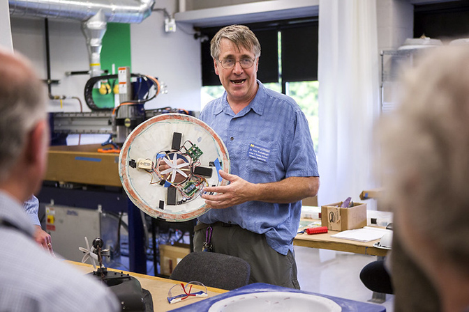
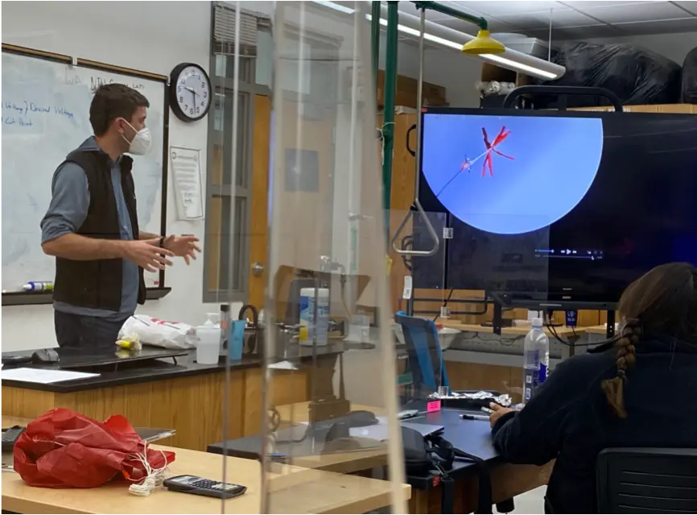

Pay It Forward
The Responsibility of the Explorer
Corwith Cramer, Woods Hole, MA / Credit: SEAThe Importance of Being an Enabler
I walked into my AE305 professor's office in January of 2003 carrying a cardboard box holding a small balsawood structure. The frame had two motors attached and dual 14-inch propellers - mildly concerning and very experimental in nature. During the first days of class that term, Dr. Pete Washabaugh had introduced us students to hands-on experimental methods and was kicking off the lecture/lab series we'd have for the term. From wind-tunnels to "alien autopsies", we were finally getting our hands dirty as undergrads in aerospace engineering.
Over the holiday break, I had built a small aerial vehicle in the basement of my home - I was fascinated with the idea that I might be able to control a flying thing without the complexity of helicopters and no need to launch to space - just have two propellers counteract each other! Building with parts on hand, the structure only experienced a "rapid unplanned disassembly" a handful of times (I had no idea that balsa wood could be ejected hard enough to become stuck to a concrete wall!). I wanted more advice, and so, upon returning to school, I was scouring each new professor I had that term to see if they might be the right personality to approach.
At home, our basement was always my workshop. There I built robotic submersibles that I tested in the scout camp lake. Plants grew high from seeds we had launched on the space shuttle. And more than one device met an untimely demise when the number of parts in a re-assembled "thing" was less than the number of parts it had started with before disassembly!

In my mind, I still see Pete giving me a curious look after I had placed my offering on his desk. We had a short conversation, during which he suggested I chat further with Prof Carlos Cesnik, but the most important thing was what he did next. He said "come with me", and we walked to the next building over, where a locked door hid a storage closet of a room, packed with boxes, project remains, blueprints, and spare parts covering decades of research and student leavings.
"Why don't you play with some of this stuff?"
Diane Tinucci, my high-school language arts teacher who connected me to Washington University's Aria Project, allowing me to launch a payload on the space shuttle. Pete Washabaugh, who gave me my first university lab space (and supported oh-so-much troublemaking). Jamie Cutler, who's interview started with "describe to me the contents of a Radio Shack". Pierre Kabamba, who taught me how to write with meaning.
My parents, who first had me look up.
"We stand on the shoulders of giants". But we also benefit from the quiet nudging, encouragement, and opportunities that extend our reach. It is the responsibility of all of us to pay this forward.
The most meaningful way I can repay that investment is not simply to become successful, but to make it easier for someone else to begin. Below are a few of my attempts to make a future-leaning impact - I view it as my own obligation and would challenge the students I work with to do the same.
Providing Some Tools
I've been teaching classes since early in graduate school, including serving as a teaching assistant for AE305, creating an Aerospace Robotics Lab, and informally creating a series of basic electronics courses for student teams. However, when ASU's SESE invited me to teach a course as adjunct faculty, it was the first time I had thought deeply on a teaching philosophy and what topics I would want to cover. Practical, hands-on experiences are where I believe many students learn best - experiencing challenges, suffering failures, learning processes and skills to work through them, and gaining the experience to avoid those failures outside of the classroom. In particular, an end-to-end experience, including operations, provides a framework for future efforts.
Field Engineering - better known as "Macgyver Engineering" - started as a short-course to enable successful field work and provide basic training to prepare students to serve on larger field endeavors. Teach scientists to think through troubleshooting and learn some tricks, teach engineers some basic scientific field methods, get both groups to work on joint projects and learn to work as a team.
Learn More About Field Engineering
The core course is run over two weekends, beginning with two days of projects, skill-sessions, and lectures. Each lunch, the team sits down to discuss what things they wish they could learn, or topics they'd like to hear about in the future. It allows for immediate tactical feedback and some ownership of the class by the students. Over the course of five offerings, students have continually emphasized the desire for training on expedition logistics and end-to-end experiences. Directly from this feedback, students now build, plan, and fly their own payloads on a high-altitude balloon flight to roughly 80,000 feet. Between Sunday evening on Weekend 1 to a successful launch on Sunday of Weekend 2, students are responsible for all field logistics, have to handle launch and recovery safety and legal concerns, and must execute a launch campaign reaching near space.
Close to 200 students have now participated in variations of this course.
Today, Field Engineering has evolved into a signature course with a number of offerings modified for specific objectives. Western Michigan University ran a CubeSat Course around the framework, with extra emphasis on subsystem interaction. The Caltech "Practical Electronics for Space Applications" expands this framework to two terms to focus on spaceflight readiness and payload accommodation.

For me, the most impactful offering was through a collaboration with JPL, ASU, and Navajo Technical University (NTU). During this course, held on site at NTU, I tossed out much of the curriculum within hours of starting. I quickly learned that for this group of students, it was more important to discuss opportunities that could be sought, to show that the students were capable and deserving of such opportunities, and to even hint that such opportunities existed. We still launched a high-altitude balloon payload created, they still had a chase that led to a payload recovery on a distant rocky cliff. And, as always, the students identified their favorite photo, just before balloon burst, looking down from far above. Their balloon showed against a backdrop of the blackest space - a testament to how far they had already risen.
That class is, in part, why this website exists.
Based on what I learned, my hope - for part of this site - is to open the access to and broaden the reach of the Field Engineering course:
- To provide a listing of opportunities, readily accessible. Something I yearned for as a student.
- To provide a list of resources for those who would like to head to the field safely and effectively.
- To provide appropriate sample lists of gear, along with the rationale behind choices.
- To encourage instructors to run their own Field Engineering courses, providing templates to do so
- And hopefully, in time, inspire the next generation of explorers.
Not all of the above goals are yet met, but I'm working on them.
Creating Opportunities
I really try to make Brandon Rodriguez's job difficult.
As Director of STEM and Pathways at the Center for Collaborative Education, Brandon is constantly seeking opportunities for the students in the communities he is attached to. I've long believed that pairing students with experts who have problems to solve or work to complete is an effective win-win. Unfortunately for Brandon, I keep finding unique opportunities for his students that take a bit of effort to stand up.
Our first formal collaboration was in the creation of a Marine Robotics Program in partnership with the Sea Education Association (SEA), the Woods Hole Oceanographic Institution (WHOI) and the California Institute of Technology (Caltech). After I reached out to SEA with an interest in volunteering as staff on one of their tall ships, we started discussing opportunities to build a larger program. We quickly realized that there was a potential course offering that could go beyond the usual tall-ship scientific voyage - what if we created an offering to teach robotics from a space and sea perspective? What if we brought in colleagues at other institutions to support? And what if we developed a more formal curriculum to better meet the needs of the students?
Highlights from the inaugural SEA-Caltech-JPL-WHOI-CCE Marine Robotics Program, August 2025.
Brandon and other colleagues were up for the challenge. In August of 2025, we executed the vision that had taken a year to come together and brought students to visit Caltech, JPL and WHOI before departing on a 12-day voyage on the open ocean. Students learned the basics of marine science, deployed autonomous boats and submersibles, and ran away from a hurricane into Boston harbor. The most impactful moments were the quiet evenings, when we gathered around a bench or sat on deck beneath the stars, answering meandering questions about any topic that might arise. Describe why the submersible was built this way. Talk about the search for life beyond Earth. Teach me how to make that knot.
This wasn't the first time that I was a volunteer instructor. I participated as a teacher in the Songam Space Center English Summer Camp for several years, have regularly supported interns, hold workshops at conferences (often helping to review student space mission endeavors) and participate in outreach, such as with AIAA.
Even so, there are some collaborations that stand out. It's not every day that you get to run a robotics class for high-schoolers while sailing on the high-seas in a tall-ship. It's not every day you hear as students continue to reach out for mentorship a year later.
But of all the students I've had the privilege to work with over the years, one story of impact stands out to me. It goes back to 2019, and the second run of the Caltech-derivative of Field Engineering.
After the last class, the term was complete. I left the students in the lab to finish cleaning up and headed for the parking lot. As I walked toward my car, I heard behind me, "Professor Klesh!" I turned. She quickly explained that, as a mechanical engineer, before the class she had never soldered, never programmed a microcontroller, and wasn't sure she could. That term, her robotic payload reached more than 80,000 feet. Today, she is building electronics that will head to the lunar surface as part of a JPL mission.
Create opportunities for others and everyone will rise.
Afterthoughts - One More Story, at Pete's Request
Pete Washabaugh and others describing today's Engin 100 / Aero 205 course and the importance of failing, teaming, and multidisciplinary engineering. Full video here.
In the creation of this site, I ran this page by Pete Washabaugh - he encouraged one additional story.
During the summer of 2005, Pete asked myself and a friend, Dave Spytek, to spend some time in the Engineering 100 lab, which shared space with AE305. Pete had been teaching a blimp course where student teams first built and understood characteristics of a balloon, then extended that experience in the creation and racing of a blimp. We often chatted about hands-on courses and throughout the next few years, various ideas would bat back and forth, or short-courses attempted. As an aside, I adopted that same two-project structure in my own instruction.
This particular summer, he wanted to see how we might improve the student experience and involve more automation and controls. We proposed using many of the existing parts to build a small hovercraft. The deck was flat cardboard, the skirt thin plastic trash-can liner, the motors and batteries held on a balsa wood frame. When Pete came to check-in, we drove that small vehicle around the hallways, slightly tilted, at times with a motor or ballast slipping off its mount, occasionally crashing into walls. But it proved the concept.
Today, students in Engin 100 and the newer AE205 build hovercraft using 3D-printed and composite parts, rely on CAD designs and aerodynamic simulations. The designs and approaches continue to evolve with the available tools, but the core - you must master 2D control before flying in 3D - remains.
When I last visited the aerospace department, off in a corner, I saw a familiar sight - a small, brown, cardboard hovercraft, resting on a back shelf. Over the last 21 years, over a thousand students have likely taken Pete's classes, using balloons and blimps and hovercraft to learn the basics of engineering. Today, the hovercraft is a central project in the curriculum. It started with cardboard seed of a craft, now resting forlorn in a corner.
"Your involvement is definitely more prominent than you portray. I know you didn't physically do the majority of the [course] development, but it would not have occurred without your seeding." - Pete Washabaugh.
Thanks Pete.